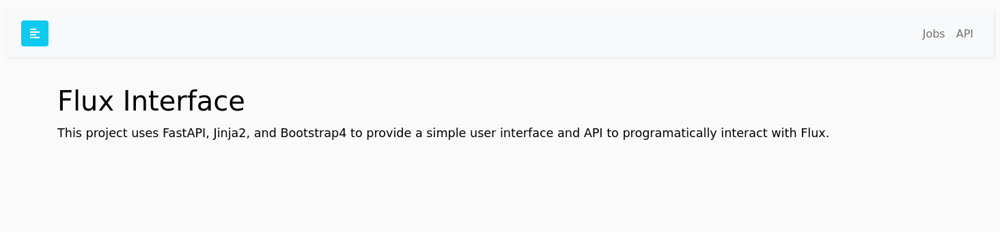

Developer Guide¶
This developer guide includes complete instructions for setting up a developer environment.
Devcontainer¶
If you use VSCode a .devcontainer recipe is available that makes it easy to spin up an environment just by way of opening the repository in VSCode! After doing this, continue to Local below.
Docker¶
You can use the demo container, either as provided or build on your own, to run the server and interact with it. To optionally build the container:
$ docker build -t ghcr.io/flux-framework/flux-restful-api .
To build ensuring there is authentication (this will use user and token defaults)
$ docker build --build-arg use_auth=true -t ghcr.io/flux-framework/flux-restful-api .
Or define extra builds args --build-arg user=fluxuser --build-arg token=12345 to customize the username and token!
Build arguments supported are:
| Name | Description | Default |
|---|---|---|
| user | Username for basic auth | unset |
| token | Token password for basic auth | unset |
| use_auth | Turn on authentication | unset (meaning false) |
| port | Port to run service on (and expose) | 5000 |
| host | Host to run service on (you probably shouldn't change this) | 0.0.0.0 |
| workers | Number of workers to run uvicorn with (required for Flux jobs with >1 process) | 1 |
And run it ensuring you expose port 5000. The container should show you if you’ve correctly provided auth (or not):
$ docker run --rm -it -p 5000:5000 ghcr.io/flux-framework/flux-restful-api
🍓 Require auth: True
🍓 Server mode: single-user
🍓 Secret key ***********
🍓 Flux user: ********
🍓 Flux token: *****
collected 5 items
INFO: Started server process [72]
INFO: Waiting for application startup.
INFO: Application startup complete.
INFO: Uvicorn running on http://0.0.0.0:5000 (Press CTRL+C to quit)
Or run detached and then stop later:
$ docker run --name flux-restful -d --rm -it -p 5000:5000 ghcr.io/flux-framework/flux-restful-api
$ docker stop flux-restful
Finally, if you want to install a custom branch (and/or repository) of the RESTFul API, we provide an environment variable to do this. E.g., this makes it easy to test a custom branch in CI without needing to push a container to a registry. Here is how to specify a branch (and default to flux-framework/flux-restful-api) or your own repository base:
$ docker run --env INSTALL_BRANCH=add/feature --env INSTALL_REPO=user/flux-restful-api -d --rm -it -p 5000:5000 ghcr.io/flux-framework/flux-restful-api
Local¶
You can use this setup locally (if you have flux and Python available) or within the Dev Container in a VSCode environment.
1. Install¶
After cloning the repository, install dependencies:
$ python -m venv env
$ source env/bin/activate
Install requirements (note that you also need Flux Python available, which isn’t in these requirements as you cannot install from pip).
pip install -r requirements.txt
Note that there is a bug with fastapi so we need to do some installs outside of the requirements.txt:
pip install pydantic==1.10.11
pip install pydantic-settings
2. Start Service¶
There are two ways to start the app! You can either have it be the entry for flux start:
$ flux start uvicorn app.main:app --host=0.0.0.0 --port=5000
Or do it separately (two commands):
flux start --test-size=4
uvicorn app.main:app --host=0.0.0.0 --port=5000
For the latter, you can also use the Makefile:
$ make
If you are developing, you must do the second approach as the server won’t live-update with the first. If you want to start flux running as a separate process:
sudo -u flux /usr/bin/flux broker \
--config-path=/etc/flux/system/conf.d \
-Scron.directory=/etc/flux/system/cron.d \
-Srundir=/run/flux \
-Sstatedir=${STATE_DIRECTORY:-/var/lib/flux} \
-Slocal-uri=local:///run/flux/local \
-Slog-stderr-level=6 \
-Slog-stderr-mode=local \
-Sbroker.rc2_none \
-Sbroker.quorum=0 \
-Sbroker.quorum-timeout=none \
-Sbroker.exit-norestart=42 \
-Scontent.restore=auto &
And then we need munge to be started (this should be done by the devcontainer):
$ sudo service munge start
And export any authentication envars you need before running make.
export FLUX_URI=local:///run/flux/local
$ sudo -E make
3. Authentication¶
If you want to require authentication for the user, export the user and token and a variable that tells the server to use auth:
export FLUX_USER=$USER
export FLUX_TOKEN=123456
export FLUX_REQUIRE_AUTH=true
As an alternative, you can enable PAM authentication to use user accounts on the running server:
export FLUX_ENABLE_PAM=true
export FLUX_REQUIRE_AUTH=true
Authentication must be enabled for PAM to work too - you can’t just enable the first. For the latter (multi-user) flux needs to be started first (e.g., the instance or broker) and then the actual server needs to be started by root.
Interactions¶
Regardless of how you install, you can open your host to http://127.0.0.1:5000 to see the very simple interface! This currently has API documentation (openapi) and we will soon add a table of jobs.

Once you have the server running, you can use an example client to interact with the server. See our User Guide for these instructions.
Environment¶
Wherever you run the app, you can control variables (settings) via the environment. The following variables are available (with their defaults):
| Name | Description | Default |
|---|---|---|
| FLUX_REQUIRE_AUTH | The server should require basic auth for API and authenticated endpoints | False (unset) |
| FLUX_TOKEN | The token password to require for Basic Auth (if FLUX_REQUIRE_AUTH is set) |
unset |
| FLUX_USER | The username to require for Basic Auth (if FLUX_REQUIRE_AUTH is set) |
unset |
| FLUX_HAS_GPU | GPUs are available for the user to request | unset |
| FLUX_NUMBER_NODES | The number of nodes available (exposed) in the cluster | 1 |
| FLUX_OPTION_FLAGS | Option flags to give to flux, in the same format you'd give on the command line | unset |
| FLUX_SECRET_KEY | secret key to be shared between user and server (required) | unset |
| FLUX_ACCESS_TOKEN_EXPIRES_MINUTES | number of minutes to expire an access token | 600 |
| FLUX_RESTFUL_HOST | Host for command line client | http://127.0.0.1:5000 |
Flux Option Flags¶
Option flags can be set server-wide or on the fly by a user in the interface (or restful API). An option set by a user will over-ride the server setting. An example setting a server-level option flags is below:
export FLUX_OPTION_FLAGS="-ompi=openmpi@5"
This would be translated to:
fluxjob = flux.job.JobspecV1.from_command(command, **kwargs)
fluxjob.setattr_shell_option("mpi", "openmpi@5")
And note that you can easily set more than one:
export FLUX_OPTION_FLAGS="-ompi=openmpi@5 -okey=value"
Code Linting¶
We use pre-commit to handle code linting and formatting, including:
black
isort
flake8
Our setup also handles line endings and ensuring that you don’t add large files!
Using the tools is easy. After preparing your local environment, you can use pre-commit as follows. Here is a manual run:
$ pre-commit run --all-files
check for added large files..............................................Passed
check for case conflicts.................................................Passed
check docstring is first.................................................Passed
fix end of files.........................................................Passed
trim trailing whitespace.................................................Passed
mixed line ending........................................................Passed
black....................................................................Passed
isort....................................................................Passed
flake8...................................................................Passed
And to install as a hook (recommended so you never commit with linting flaws!)
$ pre-commit install
Database¶
The database config was created with:
$ alembic init --template generic ./migrations
At this point we need to edit migrations/env.py so it could see our database models. This part:
# This line was added so we import our database
from app.db.base import Base # noqa
target_metadata = Base.metadata
At this point we can do a migration to create the initial (empty) tables.
$ alembic revision --autogenerate -m "Create intital tables"
And then to run the first set of migrations:
$ alembic upgrade head
At this point we can create our initial super flux user:
export FLUX_USER=fluxuser
export FLUX_TOKEN=12345
$ python app/db/init_db.py init
# python app/db/init_db.py init
INFO:__main__:Creating initial data
INFO:__main__:User fluxuser has been created.
INFO:__main__:Initial data created
or add a user:
$ python app/db/init_db.py add-user peenut peenut
INFO:__main__:User peenut has been created.
You can see how we run these commands in the entrypoint.sh for the container.
The database is always created fresh, and the flux user and token (superuser)
are always generated from the environment variables shown above.
Documentation¶
The documentation is provided in the docs folder of the repository,
and generally most content that you might want to add is under
getting_started. For ease of contribution, files that are likely to be
updated by contributors (e.g., mostly everything but the module generated files)
are written in markdown. If you need to use toctree you should not use extra newlines or spaces (see index.md files for examples). The documentation is also provided in Markdown (instead of rst or restructured syntax)
to make contribution easier for the community.
Finally, we recommend you use the same development environment also to build and work on documentation. The reason is because we import the app to derive docstrings, and this will require having Flux.
NOTE to build the documentation you will need an unauthenticated flux endpoint running. E.g., in another terminal:
$ flux start uvicorn app.main:app --host=0.0.0.0 --port=5000
Install Dependencies and Build¶
The documentation is built using sphinx, and generally you can install dependencies (done in devcontainer):
cd docs
pip install -r requirements.txt
# Ensure auth is off
unset FLUX_REQUIRE_AUTH
# And build the docs into _build/html
make html
Preview Documentation¶
After make html you can enter into _build/html and start a local web
server to preview:
$ python -m http.server 9999
And open your browser to localhost:9999
Run Tests¶
To run tests, from within the devcontainers environment (or with a local install) of Flux alongside the app) you can use flux start. You will need to run them as the flux instance owner. E.g., if it’s flux:
$ sudo -u flux flux start pytest -xs tests/test_api.py
or if it’s just root / a single user:
$ flux start pytest -xs tests/test_api.py
Docstrings¶
To render our Python API into the docs, we keep an updated restructured
syntax in the docs/source folder that you can update on demand as
follows:
$ ./apidoc.sh
This should only be required if you change any docstrings or add/remove functions from oras-py source code.